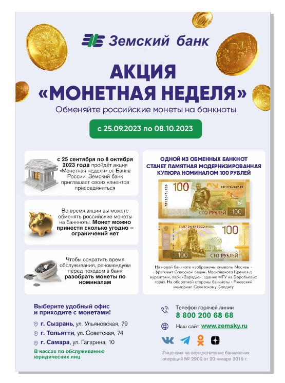

Акция «Монетная неделя» с 25.09.2023 по 08.10.2023
с 25 сентября по 8 октября 2023 года пройдёт акция «Монетная неделя» от Банка России. Земский банк приглашает своих клиентов присоединиться.
Во время акции вы можете обменять российские монеты на банкноты. Монет можно принести сколько угодно – ограничений нет.
Одной из обменных банкнот станет памятная модернизированную купюра номиналом 100 рублей. На новой банкноте изображены символы Москвы — фрагмент Спасской башни Московского Кремля с курантами, парк «Зарядье», здание МГУ на Воробьевых горах. На оборотной стороны банкноты — Ржевский мемориал Советскому Cолдату.
Выберите удобный офис из предложенного ниже списка – и приходите с монетами!
г. Сызрань, ул. Ульяновская, 79
г. Тольятти, ул. Советская, 74
г. Самара, ул. Гагарина, 10
(в касах по обслуживанию юридических лиц )
Чтобы сократить время обслуживания рекомендуем перед походом в банк разобрать монеты по номиналам.
